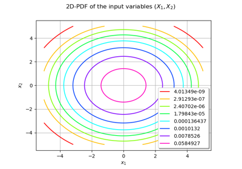
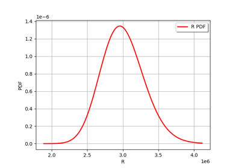
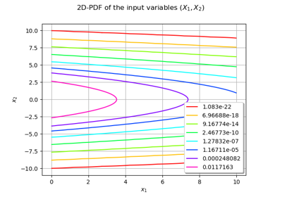

FORMResult¶
- class FORMResult(*args)¶
Result of a FORM analysis.
- Available constructors:
FORMResult(designPoint, limitStateVariable, isInFailureSpace)
- Parameters:
- designPointsequence of float
Design point in the standard space resulting from the optimization algorithm.
- limitStateVariable
RandomVector Event of which the probability is calculated.
- isInFailureSpacebool
Indicates whether the origin of the standard space is in the failure space.
See also
Notes
Structure created by the method run() of the
FORMclass and obtained thanks to its method getResult().Methods
Draw the sensitivities of the FORM failure probability.
Draw the sensitivity of the Hasofer Reliability Index.
drawImportanceFactors(*args)Draw the importance factors.
Accessor to the object's name.
Accessor to the failure probability
 .
.Accessor to the sentivities of the FORM failure probability
.Accessor to the Generalised Reliability Index.
Accessor to the Hasofer Reliability Index.
Accessor to the sensitivities of the Hasofer Reliability Index.
getId()Accessor to the object's id.
getImportanceFactors(*args)Accessor to the importance factors.
Accessor to know if the standard point origin is in the failure space.
Accessor to the event of which the probability is calculated.
Accessor to the mean point in the standard event domain.
getName()Accessor to the object's name.
Accessor to the result of the optimization problem.
Accessor to the design point in the physical space.
Accessor to the object's shadowed id.
Accessor to the design point in the standard space.
Accessor to the object's visibility state.
hasName()Test if the object is named.
Test if the object has a distinguishable name.
Accessor to specify if the standard point origin is in the failure space.
Accessor to the mean point in the standard event domain.
setName(name)Accessor to the object's name.
setOptimizationResult(optimizationResult)Accessor to the result of the optimization problem.
setShadowedId(id)Accessor to the object's shadowed id.
Accessor to the design point in the standard space.
setVisibility(visible)Accessor to the object's visibility state.
- __init__(*args)¶
- drawEventProbabilitySensitivity(*args)¶
Draw the sensitivities of the FORM failure probability.
- Parameters:
- widthfloat, optional
Value to calculate the shift position of the
BarPlot. By default it is 1.0.
- Returns:
- graphCollectionlist of two
Graphcontaining a barplot The first graph drawing the sensitivities of the FORM failure probability with regards to the parameters of the probabilistic input vector. The second graph drawing the sensitivities of the FORM failure probability with regards to the parameters of the dependence structure of the probabilistic input vector.
- graphCollectionlist of two
- drawHasoferReliabilityIndexSensitivity(*args)¶
Draw the sensitivity of the Hasofer Reliability Index.
- Parameters:
- widthfloat, optional
Value to calculate the shift position of the
BarPlot. By default it is 1.0.
- Returns:
- graphCollectionsequence of two
Graphcontaining a barplot The first graph drawing the sensitivity of the Hasofer Reliability Index to the parameters of the marginals of the probabilistic input vector. The second graph drawing the sensitivity of the Hasofer Reliability Index to the parameters of the dependence structure of the probabilistic input vector.
- graphCollectionsequence of two
- drawImportanceFactors(*args)¶
Draw the importance factors.
- Parameters:
- typeint, optional
- Returns:
- graph
Graph Pie of the importance factors of the probabilistic variables.
- graph
- getClassName()¶
Accessor to the object’s name.
- Returns:
- class_namestr
The object class name (object.__class__.__name__).
- getEventProbability()¶
Accessor to the failure probability
.- Returns:
- probabilitypositive float
The FORM failure probability
.
- getEventProbabilitySensitivity()¶
Accessor to the sentivities of the FORM failure probability
.- Returns:
- sentivities
Point Sentivities of the FORM failure probability with regards to the parameters of the probabilistic input vector and to parameters of the dependence structure of the probabilistic input vector.
- sentivities
- getGeneralisedReliabilityIndex()¶
Accessor to the Generalised Reliability Index.
- Returns:
- indexfloat
Generalised reliability index
 from the FORM failure
probability is equal to
from the FORM failure
probability is equal to  the Hasofer reliability index
the Hasofer reliability index
 according to the fact the standard space center
fulfills the event or not.
according to the fact the standard space center
fulfills the event or not.
- getHasoferReliabilityIndex()¶
Accessor to the Hasofer Reliability Index.
- Returns:
- indexfloat
Hasofer Reliability Index which is the distance of the design point from the origin of the standard space
 .
.
- getHasoferReliabilityIndexSensitivity()¶
Accessor to the sensitivities of the Hasofer Reliability Index.
- Returns:
- sensitivity
PointWithDescription Sequence containing the sensitivities of the Hasofer Reliability Index to the parameters of the probabilistic input vector (marginals and dependence structure) with a description for each component.
- sensitivity
- getId()¶
Accessor to the object’s id.
- Returns:
- idint
Internal unique identifier.
- getImportanceFactors(*args)¶
Accessor to the importance factors.
- Parameters:
- typeint, optional
When ot.AnalyticalResult.ELLIPTICAL, the importance factors are evaluated as the square of the co-factors of the design point in the elliptical space of the iso-probabilistic transformation (Y-space).
When ot.AnalyticalResult.CLASSICAL they are evaluated as the square of the co-factors of the design point in the U-space.
When ot.AnalyticalResult.PHYSICAL, the importance factors are evaluated as the square of the physical sensitivities.
By default type = ot.AnalyticalResult.ELLIPTICAL.
- Returns:
- factors
PointWithDescription Sequence containing the importance factors with a description for each component.
- factors
Notes
If the importance factors are evaluated as the square of the co-factors of the design point in the U-space :

If the importance factors are evaluated as the square of the co-factors of the design point in the Y-space :

where
![Y^* = \left(
\begin{array}{c}
E^{-1}\circ F_1(X_1^*) \\
E^{-1}\circ F_2(X_2^*) \\
\vdots \\
E^{-1}\circ F_n(X_n^*)
\end{array}
\right)]()
with
 is the design point in the physical space and
is the design point in the physical space and  the univariate standard CDF of the elliptical space. In the case where the
input distribution of
the univariate standard CDF of the elliptical space. In the case where the
input distribution of  has an elliptical copula
has an elliptical copula
 , then has the same type as .
In the case where the input distribution of has a copula
, then has the same type as .
In the case where the input distribution of has a copula
 which is not elliptical, then
which is not elliptical, then  where
where  is the CDF of the standard normal.
is the CDF of the standard normal.If the importance factors are evaluated as the square of the physical sensitivities :

where
![s_i = \displaystyle \frac{\partial \beta}{\partial x_i} (x^*)
= \sum_{j=1}^n \frac{\partial \beta}{\partial u_i} \frac{\partial u_j}{\partial x_i} (x^*)]()
- getIsStandardPointOriginInFailureSpace()¶
Accessor to know if the standard point origin is in the failure space.
- Returns:
- isInFailureSpacebool
Indicates whether the origin of the standard space is in the failure space.
- getLimitStateVariable()¶
Accessor to the event of which the probability is calculated.
- Returns:
- limitStateVariable
RandomVector Event of which the probability is calculated.
- limitStateVariable
- getMeanPointInStandardEventDomain()¶
Accessor to the mean point in the standard event domain.
- Returns:
- meanPoint
Point Mean point of the standard space distribution restricted to the event domain:
![\displaystyle \frac{1}{E_1(-\beta)}\int_{\beta}^{\infty} u_1 p_1(u_1)\di{u_1}]() where
where  is the spheric univariate distribution of the standard
space and
is the spheric univariate distribution of the standard
space and  the reliability index.
the reliability index.
- meanPoint
- getName()¶
Accessor to the object’s name.
- Returns:
- namestr
The name of the object.
- getOptimizationResult()¶
Accessor to the result of the optimization problem.
- Returns:
- result
OptimizationResult Contains the design point in the standard space and information concerning the convergence of the optimization algorithm.
- result
- getPhysicalSpaceDesignPoint()¶
Accessor to the design point in the physical space.
- Returns:
- designPoint
Point Design point in the physical space resulting from the optimization algorithm.
- designPoint
- getShadowedId()¶
Accessor to the object’s shadowed id.
- Returns:
- idint
Internal unique identifier.
- getStandardSpaceDesignPoint()¶
Accessor to the design point in the standard space.
- Returns:
- designPoint
Point Design point in the standard space resulting from the optimization algorithm.
- designPoint
- getVisibility()¶
Accessor to the object’s visibility state.
- Returns:
- visiblebool
Visibility flag.
- hasName()¶
Test if the object is named.
- Returns:
- hasNamebool
True if the name is not empty.
- hasVisibleName()¶
Test if the object has a distinguishable name.
- Returns:
- hasVisibleNamebool
True if the name is not empty and not the default one.
- setIsStandardPointOriginInFailureSpace(isStandardPointOriginInFailureSpace)¶
Accessor to specify if the standard point origin is in the failure space.
- Parameters:
- isInFailureSpacebool
Indicates whether the origin of the standard space is in the failure space.
- setMeanPointInStandardEventDomain(meanPointInStandardEventDomain)¶
Accessor to the mean point in the standard event domain.
- Parameters:
- meanPointsequence of float
Mean point of the standard space distribution restricted to the event domain:
where is the spheric univariate distribution of the standard
space and the reliability index.
- setName(name)¶
Accessor to the object’s name.
- Parameters:
- namestr
The name of the object.
- setOptimizationResult(optimizationResult)¶
Accessor to the result of the optimization problem.
- Parameters:
- result
OptimizationResult Contains the design point in the standard space and information concerning the convergence of the optimization algorithm.
- result
- setShadowedId(id)¶
Accessor to the object’s shadowed id.
- Parameters:
- idint
Internal unique identifier.
- setStandardSpaceDesignPoint(standardSpaceDesignPoint)¶
Accessor to the design point in the standard space.
- Parameters:
- designPointsequence of float
Design point in the standard space resulting from the optimization algorithm.
- setVisibility(visible)¶
Accessor to the object’s visibility state.
- Parameters:
- visiblebool
Visibility flag.
Examples using the class¶

Use the post-analytical importance sampling algorithm

Use the FORM algorithm in case of several design points

Test the design point with the Strong Maximum Test

Axial stressed beam : comparing different methods to estimate a probability

An illustrated example of a FORM probability estimate